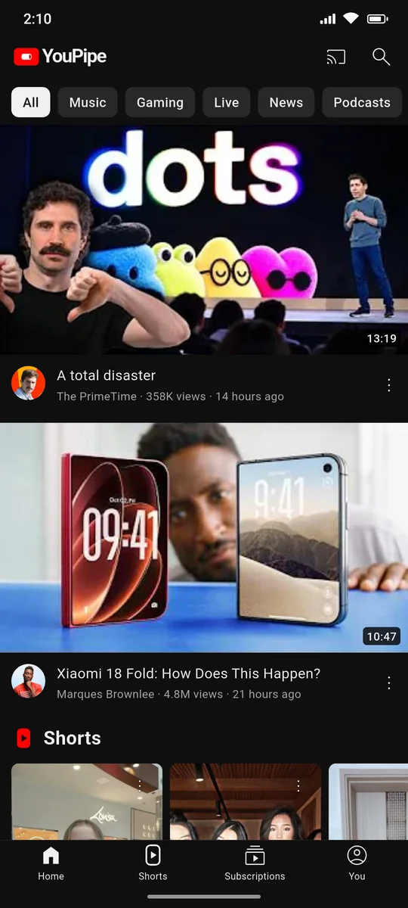
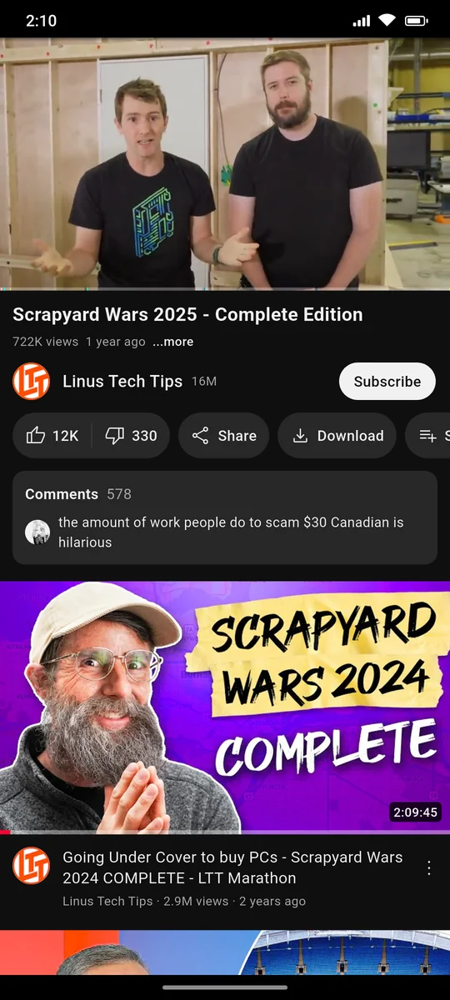
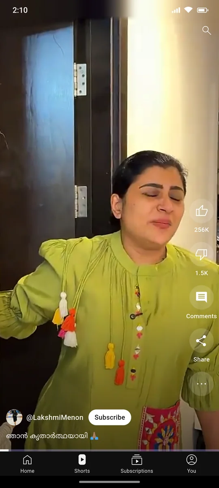
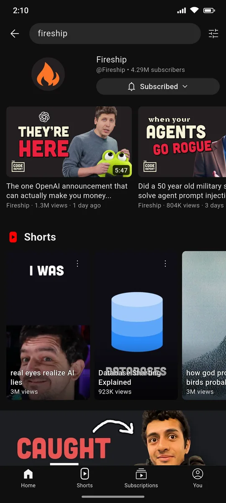
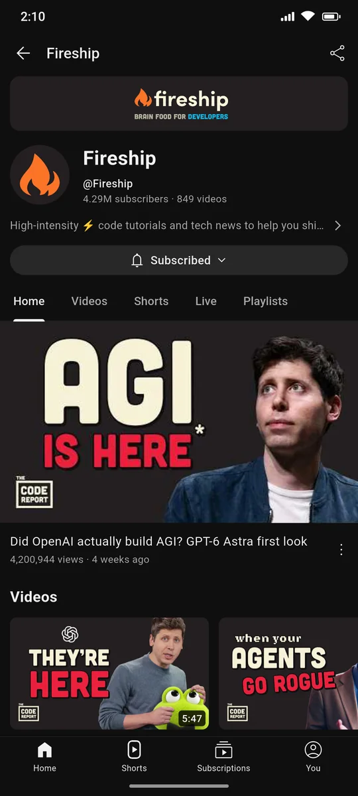
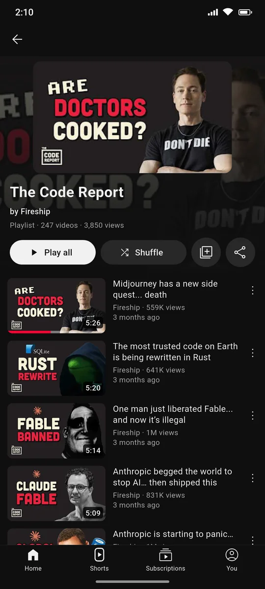
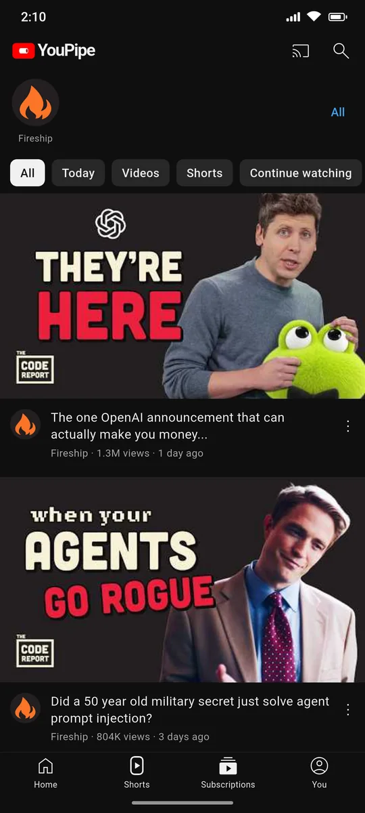

All of YouTube.None of the ads.
YouPipe is a free Android app for YouTube. Keep videos playing in the background or in a floating window, download them for later and skip the sponsor segments automatically.
Everything on YouTube, piped straight to your phone with nothing in the way.
Feels like the app you know
The layout follows YouTube on Android, so there's nothing new to learn. What's missing is the ads and the limits.
Watch
- Videos, Shorts, channels and playlists
- Keeps playing with the screen off
- Picture-in-picture when you leave the app
- Floating mini player while you browse
- Up to 4K, with chapters and captions
- Comments, replies and descriptions
Skip the boring bits
- Skips sponsor segments with SponsorBlock
- Shows dislike counts again
- Double-tap to seek, hold for 2× speed
- Playback speed, loop and sleep timer
Offline & library
- Download videos up to 1080p
- Subscribe to channels without an account
- Import subscriptions from Google Takeout or NewPipe
- History, playlists and Watch later on your phone
- Optional sign-in to bring your YouTube library
Cast
- Cast to smart TVs (DLNA)
- Chromecast and Google TV
- Control playback from the phone
- Updates itself when a new version is out
Take a look
Straight from a phone running YouPipe. Swipe or scroll sideways to see more.







Install in a minute
YouPipe isn't on the Play Store, so you install it straight from our GitHub releases. You only do this once.
Download the APK
Tap Download on this page. Your phone saves the file for you.
Allow the install
Open the file. If Android asks, allow installs from your browser or file manager.
Open and watch
That's it. From now on, the app tells you when there's a new version and installs it for you.
What you watch stays yours
No account needed, and nothing about what you watch leaves your phone except the requests to YouTube itself.
No ads, no trackers
There's no analytics or tracking code in the app.
On your phone
Your subscriptions, history, playlists and downloads are stored on your device. Even Home is put together on your phone from what you watch.
Sign-in is optional
If you sign in, it happens on Google's own page. The app never sees your password.
Questions
Is it really free?
Yes. There are no ads, subscriptions or paid features. If you'd like to help, you can support the project below.
Why isn't it on the Play Store?
It uses YouTube's private API, which the Play Store doesn't allow. That's why you download it from GitHub instead.
How do I get updates?
When you open the app, it checks for a new version. If there is one, it shows what's new and installs it after you tap Update.
Is the APK safe?
Every release is built from the public source code by GitHub Actions and signed with the same key. Android refuses any update that isn't signed with that key.
Do I need a Google account?
No. Everything works without one, including subscriptions: they're kept on your phone and the new uploads come from each channel's public feed. Signing in only adds your YouTube library, likes and recommendations.
Can I bring my subscriptions from YouTube or NewPipe?
Yes. Open Subscriptions, tap All, then ⋮ → Import, and pick the subscriptions file from Google Takeout or a NewPipe export.
How does skipping sponsors work?
YouPipe uses SponsorBlock, a community database of sponsor segments, intros and reminders to subscribe. You choose which kinds to skip. The dislike counts come from the Return YouTube Dislike project.
Can I watch on my TV?
Yes. Tap the Cast button to play on a smart TV on the same Wi-Fi (most Samsung, LG and other smart TVs support DLNA) or on a Chromecast or Google TV. Your phone streams the video to the TV, so keep it on the same Wi-Fi while you watch.
A video says YouTube wants to confirm I'm not a bot. What now?
YouTube sometimes stops anonymous playback from a network for a while, usually after a lot of videos in a short time. Wait a bit and try again, or switch between Wi-Fi and mobile data.
Keep it going
YouPipe is made in spare time and will always be free. A coffee helps keep it updated when YouTube changes things.